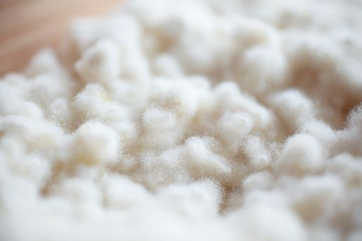
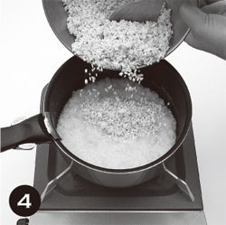

| 糀屋本店の塩麹レシピ | |
| 浅利妙峰 | |
| PHP研究所 (2011) | |

糀屋本店の塩麹レシピ
浅利妙峰
糀屋本店の塩麹レシピ
浅利妙峰
麹屋の娘として生まれ育ちながらも、麹のことを深く知らないまま歳月が流れました。2007年1月、母を亡くして家業の「糀屋本店」に戻った私は、麹のことを学びたい欲求に駆られ、新旧の文献を読むうちに麹の奥深さに魅せられました。中でも、江戸時代に書かれた『本朝食鑑』は、日本食に関する知恵の宝庫でした。麹が生活にとけ込み食の豊かさを支えていたこと、「塩麹」が使われていたことも知りました。そして、麹屋である私たちがその素晴らしさを今に伝えていないことに気がつき、家庭に麹の活躍の場を取り戻してもらおうと麹の料理講習会を始めました。
料理に味噌や醤油、甘酒を使うと味にうま味や深みが出ることから発想を得て、塩麹を作り料理に使うと、食材の持つ色や香りも引き立ち、いつもの料理が予想以上においしくなりました。まさに万能調味料。我が家では調味料の基本「さしすせそ」の「し」は塩麹に変わり、台所の必需品になりました。
この本では、塩麹のおかずをご紹介しています。どれも簡単でシンプル、特別な食材や道具もありません。お料理の上手な方も苦手な方も、楽しんでいただけます。塩麹の使い方を覚えたら、ぜひ、ご自分のレシピを作ってみてください。料理の方法は十人十色、味に正解はありません。おいしいものを作って食べて、笑顔が広がれば、心が豊かになります。そんな中にこそ、日本を支えるエネルギーがあふれてくると信じています。安心・安全な食材で作った塩麹料理で、家族や仲間と心温まる団らんの場をお楽しみいただけたらうれしいです。
浅利妙峰
基本の発酵調味料
浅利家の食卓
野菜のおかず
肉・魚のおかず
基本の発酵食品
麹のドレッシング
ごはん・パスタ
スープ
酒の肴
塩麹スイーツ
麹と塩麹の話
麹が作るのは「日本の味」
味噌や醤油、酢や日本酒など、日本の食卓に欠かせない発酵食品のおもな原料となるものが麹です。
麹は、蒸した穀類や豆類に「麹菌」と呼ばれるカビを生やしたものです。米に生やせば米麹、麦に生やせば麦麹になります。
発酵食品は、東南アジアなどの高温多湿な地域で発達しました。発酵に使われるカビは地域によってさまざまですが、日本でおもに使われる麹菌は日本の環境でしか育たないため、「国菌」に指定されています。日本の麹菌を使って作る発酵食品は、まさに「日本の味」なのです。
うま味を引き出し、保存性を高める
麹は、食材やほかの微生物と協力しておいしさを生み出します。
麹菌が米や麦に生える過程で、3つの酵素ができます。でんぷんを糖（甘味）に分解するアミラーゼ、タンパク質をアミノ酸（うま味）に分解するプロテアーゼ、脂肪を分解するリパーゼです。麹を使うとおいしさが増すのはこのためです。「塩麹」を使うと料理がおいしくなるのも同じ理由です。
保存料や添加物がなかった昔は、麹がその役目を果たしてもいました。麹は発酵する過程で人体に有害な腐敗菌の繁殖を抑えるので、食品の保存性も高くなります。
さらに、麹は免疫力を高め、腸内の善玉菌を増やします。発酵食品を食べる機会が減ったことも、現代人のアレルギーや生活習慣病の増加の一因と指摘する方もいます。また、麹菌が生む抗酸化物質が老化の原因となる活性酸素の働きを抑えることから、麹（麹酸）は化粧品などにも使われています。
私たち麹屋は麹を作る時、麹の原料となる「種麹」を種麹屋から買います。種麹は「もやし」とも呼ばれます。昔は、稲穂についた大豆ほどの大きさの「稲麹」から種麹を作っていたそうです。稲麹は、別名「宝玉」。稲を黒くする稲麹病のもととも言われていますが、昔は種麹になるありがたいものでした。ちなみに稲麹は、無農薬栽培の稲にしかつきません。
簡単に作れる万能調味料
麹は味噌や醤油を醸すだけでなく、塩麹にも使われています。
塩麹は、野菜や魚を漬ける調味料として使われてきたということが、江戸時代の書物『本朝食鑑』に記されています。食材の持ち味を引き出す塩麹があれば、いつもの食事がおいしくなります。発酵食品を食べる機会が減っている現代の食生活でも、麹を手軽に取り入れることができます。
そこで私は、「平成の大改革！」と称して、調味料の基本の「さ（砂糖）・し（塩）・す（酢）・せ（醤油）・そ（味噌）」の「さ」を、やはり麹を使って作る甘酒に（砂糖が高級品だった時代、庶民の甘味はみりんや甘酒が支えていました）、「し」を塩麹に替えて料理を始めました。これで、基本の調味料はすべて発酵調味料になります。
塩麹の作り方は簡単です。麹と塩と水を混ぜて、少し寝かせるだけ。食材のうま味を引き出す万能調味料は、自宅ですぐに作れます。料理にも手軽に使えます。
塩麹が教えてくれる素材の味
生物の塩に対する欲求は太古の昔からのものです。それは、生命の起源が海にあることと無関係ではないと思います。体が無意識に記憶している味＝塩を使って、人々はシンプルに料理をし、命をうけつないできました。
そこに麹を加えれば、食卓はもっとおいしくなります。私が作る料理の味付けは、ほとんど塩麹のみです。
現代は、おいしい調味料がたくさんあります。調味料をどんどん加えて味が奥深くなる一方で、複雑になりすぎてもいます。今はシンプルな味、素材本来のおいしさが求められています。調味料を少しずつ引き算していくと、行き着くところは、素材の持つ味。体が喜ぶ、本物の味。そのことに気がつけば、自分がおいしいと感じるものが分かります。
調味料をいくつも使わなくても大丈夫。塩麹を一つ使うだけで、豊かな食卓になります。どんな料理も作れます。
塩麹料理、始めましょう。

米麹。菌系と胞子で花のように見えることから「糀」の字が生まれた。
麹を寝かせる室蓋（木箱）。
300年前の創業当時と同じ「麹室」で麹が作られている。
自分の手と目が一番の"秤り"
「誰の身にもついている、いつでもすぐに役立つ秤。これが、自分の手と目」
料理研究家の故・沢崎梅子さんの『沢崎梅子の家庭料理の基礎』にはこう書いてあります。私が長い間、バイブルにしている本です。
レシピには分量が必ず書いてありますが、計量カップや計量スプーンがなくても、自分の目や手を使って計ることができます。そもそも、毎日料理を作る人は、だいたいが「目秤り・手秤り」。沢崎さんの本には、その考え方がとても分かりやすく書いてあります。
それを基準にすると、私の手だと、重さや量の目安は下記のようになります。もちろん、手の大きさや指の長さは人によって違うので、実際に測ってみながら、自分なりの見当をつけてもらえればと思います。
食材を切る時の大きさの目安
・1cm＝小指の爪くらい（角切りなどの目安に）
・4～5cm＝親指の長さくらい（千切りなどの目安に）
・長め＝人差し指や中指くらい
・10cm＝手の幅くらい
・15～18cm＝手首から中指の先くらい
水やだしの量の目安
・200ccカップ＝高さと直径は中指とほぼ同じ。計量カップがなくても他のコップの深さと中指の長さの割合で、1/2カップ、1/3カップという目安もつけられます。
・鍋も、深さが中指ほどで直径が中指の2倍であれば、4カップ分が入ると見当がつけられます。2カップ分が必要なら、鍋の半分まで入れることになります。
食材の重さの目安
・卵1個の重さはSサイズで約50g、Mサイズで約60g、Lサイズで約70gです。味噌、ひき肉や魚肉で作るつみれ、コロッケの種なども、卵大にまるめて計るとほぼ同じ重さになるようです。
・私の手にはMサイズの卵が3個のります。これを切った野菜におきかえると約180gが計れます。同様にして、米1合や野菜の千切りも計ることができます。
塩を計る目安
・「少々」は、親指と人差し指でつまんだくらい（小さじ1/8程度）。
・「ひとつまみ」は中指を加えた3本でつまんだくらい（小さじ1/5程度）。
・「ひとにぎり」 は手のひらでにぎったくらい（大さじ2程度）。

〈この本の使い方〉
○計量単位は、大さじ1は15cc、小さじ1は5ccです。1カップは200cc、1合は180ccです。
○調味料は、特に記載のないものは、塩は自然塩、砂糖は上白糖、醤油はこいくち醤油、味噌は好みのものを使っています。
○野菜は特に指示がない限り、皮はむかずに使っています。
○この本で使用している麹は「米麹」です。
○レシピの材料に麹とある場合は、「生麹」を指します。
○麹は生き物なので、漬ける日数や保存方法などは季節や各家庭の保存場所の状況、菌の環境によっても違ってきます。
出典：『沢崎梅子の家庭料理の基礎』（沢崎梅子著／婦人之友社）
塩麹
調味料の「さしすせそ」の「し」を塩麹に替えてみてください。
塩麹は食材のうま味を引き出すので、いつもの料理がぐんとおいしくなります。
食卓に常備して、塩味が足りない時にかけても使えます。
 材料
材料
麹 500g
塩 170g
水 600g

作り方
1 麹はばらばらになるまで手でもみほぐしておく。
2 麹と塩を合わせ、よくなじむように手でぎゅっと握りながらよくもむ。
3  に水をひたひたに注いで、ミルク状になるまで手ですり合わせる。
に水をひたひたに注いで、ミルク状になるまで手ですり合わせる。
4 密閉できる保存容器（タッパーなど）に移し、1日1回かき混ぜながら常温で1週間から10日ほどおく。
point
◎1日1回、かきまぜて
塩麹になるまでの熟成期間は1～2週間。最初の1週間は1日1回、へらなどで上下によくかき混ぜて空気を含ませてください。麹と塩がなじみ、熟成して麹の粒が小さくなり、ほんのり甘みが出たらできあがり。冷蔵庫で保存してください（保存期間）。熟成時に二酸化炭素が発生することもあるので、保存容器は少し大きめのものを。
◎シンプルな海塩を
塩麹を作る時、私は長崎県の島原で作られる「日本の海塩」を使っています。粒子がとても細かいので、麹となじむのも早いです。以前、硫黄成分を多く含むヒマラヤ塩を使ってみたところ、硫黄の香りが強烈に際立ってしまいました。麹は素材本来の味や風味を引き出すので、塩麹を作る時はシンプルな海塩がおすすめです。精製塩ではなく、ミネラルたっぷりの海塩を使ってください。水は水道水でも大丈夫ですが、麹は酸性なので、アルカリ性の水は避けましょう。
◎こまめに作る
家庭で使う分量が分かってきたら、月に1～2回のペースで生麹を用意して塩麹を作ってあげると、いつも新鮮で元気な麹菌たっぷりの塩麹がいただけます。
お湯にとかすだけでだしやスープが作れる万能選手。これさえあれば、味噌汁や麺類も、あっという間にできます。しかも、ちょっと手間がかかっていそうな味もうれしい。
材料
麹 250g
こいくち醤油 500cc
酒 50cc
味噌 50g
炒りごま 150g
作り方
1 麹はすり鉢ですり、粉状になったら、いったんすり鉢から取り出す。
2 炒りごまをすり鉢で粘りが出るまでよくする。
3 木べらなどに味噌をつけて、少し焦げ目がつく程度まで火であぶる。
4 鍋に醤油と酒を入れて強火にかけ、沸騰させる。
5 のすり鉢に の麹と
の麹と の味噌を合わせ、を少しずつ入れてすり合わせる。密閉容器に移し、冷蔵庫で保存する。賞味期限は冷蔵で6ヵ月が目安。
の味噌を合わせ、を少しずつ入れてすり合わせる。密閉容器に移し、冷蔵庫で保存する。賞味期限は冷蔵で6ヵ月が目安。
ARRANGE ごまだしうどん
器にお湯とゆでたうどんを入れ、だし麹をスプーン1杯のせれば、簡単さっぱりうどんのできあがり。だし麹は白身魚をほぐして使う大分県佐伯市の郷土料理「ごまだし」をアレンジしたもの。魚の代わりに麹を使うと、やさしい味のだしに。味噌汁、鍋や刺身だれにも。
大豆の甘さが増して、いつもの納豆がおいしくなります。クラッカーにのせたり、野菜と和えたり、そのままでご飯のおともにも。アレンジ自在で料理の幅が広がります。
材料
麹 200g
納豆 200g
塩ふき昆布 25g
こいくち醤油 150cc
酒（またはみりん） 150cc
にんじん（千切り） 1本
白ごま 50g
作り方
1 麹はあらかじめ、手でばらばらにもみほぐしておく。にんじんは皮をむいて4～5cmの長さの千切りにする。
2 鍋に醤油と酒を入れて火にかけ、一煮立ちさせたら、にんじんを入れてさっと混ぜ、火を消す。
3 をボウルに移し、の麹を入れて合わせる。
4 少し冷めたら、納豆と塩ふき昆布、白ごまを入れて混ぜ合わせる。あら熱がとれたら密閉容器に移し、冷蔵庫で保存する。賞味期限は冷蔵で1ヵ月が目安。
ARRANGE 冷や奴
そのまま豆腐にのせれば栄養たっぷり、具だくさんの冷や奴に。
「さつま」は宮崎県の郷土料理「冷や汁」に似た料理です。
通常は焼いた魚も一緒にすって入れますが、私は野菜と薬味だけでシンプルに作ります。
夏、食欲のない時でもしゃばしゃばと食べられます。
材料（2人分）
きゅうり 1/2本
こんにゃく 1/4丁
あさつき 大さじ2
大葉 3枚
かぼすの皮 適量
麹 50g
甘酒 大さじ1（なければ砂糖ひとつまみ）
白味噌 50g
ごま 大さじ1
熱湯 100cc
作り方
1 麹とごまをすり鉢でよくすり合わせる。白味噌と甘酒、熱湯を加えてなめらかになるまでする。
2 きゅうりは千切り、こんにゃくはよく洗って角切りにする。あさつきは小口切り、大葉は5mm幅に、かぼすの皮は細かく刻む。かぼすがなければ、すだちやゆずの皮などを使う。
3 ご飯（分量外）にとをのせて混ぜながら食べる。
塩麹Q＆A
麹って何ですか？
麹菌というカビからできています。
穀類を蒸して寝かし、麹菌というカビを繁殖させたもので、味噌や醤油、みりん、甘酒、日本酒、焼酎、泡盛、漬け物などの発酵食品を作る時に用います。蒸した米に生やせば米麹、蒸した豆なら豆麹、麦なら麦麹になります。
生麹と乾燥麹の違いは？
乾燥麹は戻して使います。
米や麦などに麹菌を繁殖させてできた麹は「生麹」です。この水分を少なくしたものが「乾燥麹」で日持ちがします。いずれも麹の働きは変わりません。生麹はそのまま使えますが、乾燥麹は水またはぬるま湯で戻して使います。
一般的には味噌や醤油仕立てで作りますが、我が家では、だしも味噌も醤油も酒も使いません。
味付けは塩麹とだし麹のみ。残り野菜に肉や魚を加えれば、これだけで具だくさんのおかずになります。
材料（2人分）
だいこん 1/4本
にんじん 1/2本
ごぼう 1/2本
里芋 2個
こんにゃく 1/4丁
しいたけ 2枚
豆腐 1/2丁
長ねぎ 1本
塩麹 大さじ4
だし麹 大さじ1（なければ入れなくてもよい）
水 500cc
ごま油 適量
作り方
1 野菜はよく水洗いする。だいこん、にんじん、軸をとったしいたけはすべて太めの千切りに、ごぼうは斜め薄切りに、長ねぎは斜め切りにする。こんにゃくは一口大にちぎり、里芋は皮をむいて輪切りにする。
2 の具に塩麹大さじ2をまぶす。
3 鍋にごま油を入れて熱し、軽く水切りしておいた豆腐を手でざっくりくずして入れ、中火でつぶしながら炒める。
4 だいこんとにんじんを加えて炒め、しんなりしたら、残りの野菜としいたけ、こんにゃく、塩麹を入れて炒める。
5 に材料がかぶるくらいの水を入れ、アクを取りながら、具全体に火が通るまで煮る。
6 塩麹大さじ2、だし麹を入れて味を調える。
ARRANGE 味噌汁
お椀1杯にお湯を入れ、豆腐など火を通さなくても食べられる具を入れ、だし麹大さじ1をとかすだけで簡単味噌汁のできあがり。忙しい時、疲れて料理をする気力がない時でも、温かいお味噌汁が手軽にできます。
りゅうきゅう
醤油やごまで作った漬け汁に魚の刺身を浸した郷土料理。
通常は一晩ほど漬け込みますが、だし麹を使えば簡単にできます。
鯵や鯖などお好きな魚でも作ってみてください。
材料（1人分）
鯛の刺身 1パック
だし麹 大さじ1
あさつき 適量
作り方
鯛の刺身と小口切りにしたあさつきをだし麹で和える。
ARRANGE 鯛茶漬け
りゅうきゅうはそのままでもおいしい酒の肴ですが、温かいご飯にのっけて、お茶やお湯をかければ簡単鯛茶漬けのできあがり。お好みでわさびを添えたり、ねぎを散らしても。
塩麹Q＆A
「麹」と「糀」の違いは何ですか？
「糀」は米麹を指します。
麦や米など穀類に麹菌を繁殖させたものを「麹」と言い、この漢字は中国から伝わりました。米についた菌糸と胞子が花のように見えることから、日本で明治時代に米麹を意味する「糀」の字が生まれました。糀は日本で生まれた国字（和製漢字）。糀屋本店のように「糀」を使っている店は「米麹を売っています」という意味です。
大分の家庭料理の定番「とり天」は、天ぷら粉を使って揚げますが、あっさりした衣が好きな我が家は小麦粉派。
鶏肉に塩麹をまぶしておけば、ふっくらやわらかく揚がります。
材料（2人分）
鶏むね肉 200g
塩麹 大さじ1
サラダ油 400cc
A〈衣〉
小麦粉 40g
片栗粉 10g
卵 1個
冷水 50cc
塩麹 大さじ1/2
作り方
1 鶏むね肉を一口大に切り、塩麹をよくもみこんで10分ほどおく。
2 材料Aを合わせたら、にまぶす。
3 150℃に熱したサラダ油でからっと揚げる。お好みでかぼすやすだち、ポン酢、からしを添えて。
point
◎少しおいてから揚げる
塩麹をまぶすと、麹の力で鶏肉から水分が出ます。衣をつけてすぐに揚げず、肉全体が少ししっとりするまでおいてから揚げると、衣が肉になじみ油汚れも少なくなります。
MEMO
いつもの肉や魚が絶品に
日々の食事作りで知りたいのは、買ってしばらく保存しておいた肉や魚、少し硬めの輸入牛肉などをどうおいしく料理するか、です。それにはやっぱり、塩麹。下ごしらえで食材にまぶしておけば、麹パワーでうま味が出て、肉質もやわらかくなります。また、麹は雑菌から食材を守るので、保存性も高まります。
やせうま
大分の郷土料理「だんご汁」の"だんご"にきな粉をまぶして食べるのが「やせうま」。素朴で懐かしい味のおやつです。塩麹を使った生地はよく伸びるので作りやすいです。
材料（2人分）
小麦粉（中力粉） 1カップ
塩麹 小さじ1
きな粉 大さじ5
砂糖 大さじ3
水 100cc
作り方
1 塩麹と水を合わせておく。
2 小麦粉に少しずつを加えて、耳たぶくらいの固さになるまで混ぜ合わせる。手のひらで長さ5cmくらいに細長く丸め、ラップをかけて20～30分ほど休ませる。
3 を両手の親指と人差し指で引っ張りながら平たく伸ばす。幅2cm、厚さは3mm、長さは20cmほどが目安。
4 沸騰した湯で2～3分ゆでる。浮き上がってきたら鍋からとり出し、水気を切る。
5 きな粉と砂糖を合わせ、にまぶす。
point
◎餃子の皮やピザも作れます
塩麹を使ったやせうまの種で餃子の皮、ピザの生地も作れます。餃子は種を適当な大きさに伸ばして具を包むだけ。ピザは、適当な大きさに薄く伸ばしたらフライパンで軽く両面を焼き、好みのソースや具、チーズをのせ、ふたをして焦がさないように焼きます。
かぼすジュース
大分名産のかぼすは、他の香酸柑橘類に比べ酸味が強すぎないので爽やかドリンクにぴったり。塩麹効果ではちみつの甘さも引き立ちます。水の代わりにソーダやお酒で割っても。
材料（2人分）
かぼす果汁 大さじ2
塩麹 小さじ1
はちみつ 大さじ4
水 400cc
作り方
かぼすを搾った果汁と、塩麹、はちみつをグラスに入れてよく混ぜ、冷たい水を注ぐ。
ちりめんご飯
「甘麹」を砂糖代わりに使った忙しい日の簡単ご飯です。ご飯の湯気とともに立ち上るちりめんじゃこの香ばしさがたまりません。炊き込みご飯にしてもおいしい。
材料（2人分）
ご飯 お茶碗2杯分
ちりめんじゃこ 30g
大葉 3枚
ごま 大さじ1
A
醤油 大さじ1
酒 大さじ1
甘麹 大さじ2
作り方
1 ちりめんじゃこは、硬ければ湯通ししてやわらかくしておく。大葉は好みの大きさに刻んでおく。
2 ボウルにAの材料を合わせ、ちりめんじゃこを加えて味をつける。
3 ご飯にとごまを軽く混ぜ込んでお茶碗によそい、大葉をのせる。
point
◎砂糖代わりの「甘麹」
甘麹は、甘酒を弱火で煮詰め、水分を飛ばして作ります（作り方）。糀屋本店の「甘糀」は、米麹と餅米だけで作った自然の甘味です。私は煮物やすき焼き、白和えなどを作る時、砂糖代わりに使っています。
◎ご飯を炊く時にも塩麹を
塩麹を入れてご飯を炊くと、ふっくらと優しい甘さのご飯になります。研いだお米にいつも通りの水加減で水を入れ、塩麹を加えて炊きます。米3合に対して塩麹大さじ1が目安です。
あじ寿司
新鮮な小鯵が手に入ると作ります。おもてなし料理にもぴったり。塩麹をまぶせば、麹の力で生臭さも気になりません。きらりと光る鯵についた塩麹の粒も気に入っています。
材料（2人分）
小鯵 5～6匹（10cmくらいの小さめのもの）
塩麹 大さじ2
酢 100cc
ご飯 適量
A
塩麹 大さじ1
酢 大さじ2
作り方
1 鯵は手で開き、中骨や内臓をとって洗う。塩麹をまぶして30分ほどおいたら、酢に漬けてさらに20分ほどおき、身を締める。
2 熱いご飯とあらかじめ合わせておいたAを合わせたら、しゃもじで切るように混ぜる。
3 ご飯を一口大より少し大きめに握り、1カンに鯵を1尾のせて軽く押さえる。醤油やお好みの薬味を添えて。
アスパラガスの塩麹ガーリック炒め
青い甘さがじわりとしみる一皿。下ゆでなしで炒めて、少し歯ごたえが残るくらいがおいしいです。フライパンの上で塩麹とにんにくが香ばしくはじける様子も食欲をそそります。
材料（1～2人分）
グリーンアスパラガス 1束
にんにく 1/2かけ
塩麹 大さじ1
あら挽きこしょう 適量
オリーブオイル 大さじ1/2
作り方
1 にんにくは縦半分に切って芯をとり、包丁の背でつぶす。
2 グリーンアスパラガスは根元を少しカットし、下4cm（手で曲げて自然に曲がるくらいのところまで）の皮を薄くむき、半分の長さにカットする。
3 フライパンにオリーブオイルを入れて熱し、を炒める。きつね色になったら取り出す。
4 を入れオリーブオイルがなじんだら、塩麹、あら挽きこしょうで味を調える。
point
◎こしょうはお好みで
あら挽きこしょうがなくても、塩麹とにんにくのうま味だけで十分おいしくいただけます。
じゃがいもの塩麹炒め
塩麹がうま味をじわじわ引き出して、箸が止まらないおいしさ。にんじんやたまねぎなど、どんな野菜でも同じようにおいしく作れます。塩味が足りなければ塩麹をひとふりして。
材料（2人分）
じゃがいも 2個
パプリカ 1個
オリーブオイル 大さじ1/2
塩麹 大さじ1
作り方
1 じゃがいもとパプリカは5cmくらいの長さに千切りにする。
2 フライパンにオリーブオイルを入れて熱し、じゃがいもを炒める。
3 しんなりしてきたらパプリカと塩麹を入れて炒める。
焼きねぎ
長ねぎ本来のおいしさを味わうなら、シンプルに焼くのが一番。塩麹効果で、ほんのり甘く香ばしくなります。
しゃきしゃき、時々しっとり、の歯ごたえも絶品です。
材料（1～2人分）
長ねぎ 1本半
塩麹 大さじ2
オリーブオイル 適量
作り方
1 長ねぎは3～4cmくらいの長さのぶつ切りにする。
2 フライパンにオリーブオイルをひき、長ねぎを焼く。しんなりしたら塩麹を合わせて軽く炒める。
塩麹Q＆A
調味料としての塩麹の分量の目安は？
基本ルールは「食材の10％の重さ」。
なぜかと言うと、塩麹を作る時の材料の割合は、麹3：塩1：水4。この比率だと塩の割合は12.5％。調味料として、食材の重さの10％の塩麹を使うと、その12.5％が塩分なので、0.1×0.125≒1％。「食材の10％の重さの塩麹」を使えば、その料理の塩分濃度は約1％となります。実はこの濃度、人間の血液の塩分濃度（0.9％）とほぼ同じ。だから、食べてものどが渇きにくい、体が喜ぶ塩分濃度になるのです（ちなみに、海水の塩分は2.7％。その1/3の0.9％が血液の塩分濃度です）。
かぼちゃの炒め物
かぼちゃの甘さ、ピーマンの苦さ、しいたけや豚肉のうま味がぎゅっと重なり、口の中にいろんなおいしさが広がる贅沢な野菜炒め。
食材を替えて味の組み合わせを楽しんでください。
材料（2人分）
かぼちゃ 100g
ピーマン 1個
しいたけ 2個
豚肉 30g
炒り白ごま 大さじ2/3
塩麹 小さじ1/2
サラダ油 大さじ1/2
A
塩麹 大さじ1
酒 大さじ1/2強
作り方
1 豚肉は細切りにし、塩麹をもみこんでおく。
2 かぼちゃは割り箸くらいの太さの拍子切りにし、熱湯でさっとゆでてざるに上げる。
3 ピーマンは種を除き、しいたけは軸を落として、それぞれ細切りにする。
4 フライパンにサラダ油を熱し、強火で豚肉を炒める。肉の色が変わってきたら、かぼちゃ、ピーマン、しいたけを加え、合わせておいたAと炒り白ごまを入れて手早く炒める。
塩麹Q＆A
塩を塩麹に換算するには？
塩の量の2倍。でも塩分は1/4です。
レシピに「塩 小さじ1」とあれば、塩麹は「小さじ2」に。塩の2倍の量の塩麹を使ってください。量は倍になりますが、塩分の量は塩：塩麹＝1：1/8なので塩分量は1/4ですみます。これは基本の考え方。あとのさじ加減はご家庭で足したり引いたりしながら使ってください。
ブロッコリーベーコン
おかずがもう一つ足りないな、という時に、ささっと作れる一皿。
ビールにもよく合います。味付けはもちろん、塩麹だけ。
ベーコンの塩味が強い時は、塩麹を気持ち少なめに。
材料（2人分）
ブロッコリー 1/2株
ベーコン 3枚
塩麹 大さじ1
サラダ油 大さじ1/2
作り方
1 ブロッコリーはさっとゆでておく。
2 フライパンにサラダ油を入れて1cm幅に切ったベーコンを炒め、ブロッコリー、塩麹を加えて炒める。
MEMO
野菜と塩麹のおいしい関係
食材のうま味を引き出してくれる塩麹。単品野菜の料理なら、野菜本来の持ち味が引き出され、野菜炒めのように数種類を一緒に料理する場合は、それぞれのうま味が重なって奥深い味になります。味付けは塩麹だけなのに、同じ味付けとは思えないほど、野菜によって味が変わります。しかも、調味料をいろいろと入れる時間も手間もいらず、「お醤油を入れすぎて辛くなった！ 色が濃くなった！」なんて失敗もありません。野菜をゆでる時は、お湯に塩麹を少し入れると、ゆで上がりの色もきれいです。
豆の塩麹サラダ
カロリー控えめのヘルシーなサラダ。
塩麹があればドレッシングがなくても野菜のうま味が堪能できます。
オムレツや味噌汁の具としても使えます。
材料（2人分）
塩麹 大さじ3
大豆（市販の水煮） 1/2カップ
こんにゃく 1/4丁
にんじん 20g
コーン（ホール缶詰） 1/4カップ
だし汁 1カップ
※水1カップにだし麹小さじ1/2をとかしたものでもOK
酢 大さじ1/2
作り方
1 大豆は水気をよく切っておく。
2 こんにゃくはさっと湯通しし、7～8mm角に切る。にんじんは皮をむき、7～8mm角に切ってゆでる。
3 ボウルにだし、塩麹、酢を合わせ、大豆とこんにゃく、にんじん、コーンを入れて軽く混ぜ、一晩漬け込む。
ARRANGE ひたし豆
大豆を煮て、塩麹で和えて一晩おけば、そのままおつまみになる簡単ひたし豆に。ほんのり甘くてあとをひくおいしさです。炊き込みご飯に使えば、だしいらずでおいしいご飯ができます。
塩麹Q＆A
板状と粒状の麹の違いは？
板状は自分でほぐしましょう。
完成した麹は板状のかたまりになっています。使いやすいように粒状にした市販品もあります。塩麹を作る時、板状のものを使う場合は手で砕き、もみほぐすようにして粒状にしてから使ってください。麹は自宅でも作れますが、三昼夜かかり、温度管理も大変なので、麹屋での購入をおすすめします。
豆腐のサラダ
塩麹と豆腐を合わせると水分が出やすくなります。
水分が出た豆腐を炒めるとお肉のような食感に。
マヨネーズと合わせた濃厚なサラダは、バゲットにのせたり、ディップにしたりとアレンジ自在です。
材料（2人分）
塩麹 小さじ1
木綿豆腐 1/4丁
レタス（または好みの葉野菜） 1/2個
サラダ油 大さじ1/2
〈簡単マヨネーズの材料〉
塩麹 大さじ1
卵黄 1個
酢 大さじ1
オリーブオイル 大さじ2
作り方
1 豆腐はふきんに包んで重しをし、20分ほどおく。水気をよく切ったら包丁の腹でざっくりつぶす（または、6等分くらいに手でちぎってもよい）。
2 レタスは葉を一枚ずつはがし、よく洗って水気を切る。
3 フライパンにサラダ油をひいて豆腐と塩麹を加え、水分が飛んでぽろぽろになるまで炒める。
4 マヨネーズを作る。ボウルに塩麹、卵黄、酢を合わせて手早く混ぜる（または、フードプロセッサーで混ぜる）。よく混ざったら、オリーブオイルを少しずつ入れて、少し硬さが出るまで混ぜる。
5 豆腐とのマヨネーズを合わせ、レタスで巻いて食べる。
塩麹Q＆A
古い麹は使えますか？
古い麹ならではの使い方があります。
最初は真っ白な米麹も、古くなってくると味噌と同じように黄色くなりますが、保存状態がよく、賞味期限内なら問題なく使えます。時間がたった麹はアミノ酸の生産力が高まるので、甘酒などよりも塩麹を作るのに向いています。賞味期限が過ぎてしまった麹は、ぬか床に入れると、ぬか床が元気になります。また、土に混ぜると土も元気になります。
山芋と鶏つくねの含め煮
ひき肉に卵や山芋などのつなぎを加えて作るつくね。塩麹はこの卵と同じ働きをしてくれるので、つなぎいらずで簡単につくねができます。魚のつみれにも応用できます。
材料（2人分）
やまと芋 125g
鶏ひき肉 100g
長ねぎ 1/4カップ
塩麹 大さじ1と1/2
だし汁 300cc
うすくち醤油 大さじ1/2
ゆずの皮 適量
作り方
1 やまと芋は皮をむき、酢水（分量外）に5分ほどさらした後、一口大に切る。鶏ひき肉に塩麹大さじ1/2をまぶす。
2 鶏ひき肉、みじん切りにした長ねぎ、塩麹大さじ1を合わせてよく混ぜ、つくねだねを作る。
3 鍋にだし汁を入れてわかし、つくねだねをスプーンで一口大ずつ丸めながら鍋に落とす。アクが出てきたらとる。
4 のやまと芋とうすくち醤油を加えて落としぶたをし、さらに鍋にふたをして煮立たせる。その後、弱火で15分煮る。器にもり、ゆずの皮をのせる。
かぼちゃと小豆のいとこ煮
「冬至に食べると風邪をひかない」といわれるいとこ煮。かぼちゃと小豆のやさしい甘さが引き立つよう、塩麹を使い、砂糖は控えめにしました。ほくほくな食感にほっとします。
材料（2人分）
かぼちゃ 200g
ゆで小豆 150g
塩麹 大さじ2
砂糖 30g
水 400cc
作り方
1 かぼちゃは種の部分をスプーンなどでとり、一口大に切ってから面取りをする。
2 鍋にかぼちゃを入れ、ひたるぐらいに水を入れて火にかけ沸騰させる。
3 火を弱めて砂糖を入れ、7～8分煮る。小豆を加え、塩麹で味を調えたら、ごく弱火にしてさらに5分ほど煮る。
4 かぼちゃがやわらかくなったら火からおろし、そのまま5分ほどおいて味を煮含ませる。
さやいんげんのごま塩麹和え
ほうれん草のごま塩麹和え
基本調味料に風味のある材料を組み合わせて作る和えごろも。
我が家では、ごま和えの和えごろもは、塩麹とごまだけ。
たったこれだけなのに、とろりとからまる"ごま塩麹"が野菜の淡白な味によく合います。ちょっと加えた一味がきいています。
材料（2人分）
さやいんげん 100g
塩麹 大さじ1
A〈和えごろも〉
塩麹 大さじ1/2
黒すりごま 大さじ2
一味唐辛子 少々
作り方
1 さやいんげんは筋をとる。長ければ、3cmの斜め切りにする。
2 鍋にわかした湯にと塩麹大さじ1を入れ、さっとゆでる。
3 ゆであがったら氷水にとり、水気をふきとる。
4 Aの材料を合わせ、さやいんげんと和える。
◎ ほうれん草のごま塩麹和えは、ほうれん草1/2束を同様にゆでて水気を切り、適当な大きさに切ったら和えごろもで和える。

塩麹のうま煮揚げ
おせちの定番「うま煮」の材料に
塩麹をまぶして揚げるだけ。塩麹の力で野菜の甘さも増します。特にかぶの甘さは絶品。
つゆや醤油いらずでそのままぱくぱく食べられます。
材料（4人分）
にんじん 1/2本
ごぼう 1/2本
れんこん 1/2本
かぶ 1個
長芋 1/2本
しいたけ 4枚
こんにゃく 1/2丁
鶏ささみ 3本
片栗粉 50g
米粉 50g
菜種油 250g
塩麹 材料全体の10％の量
作り方
1 ごぼうはよく洗い、10％の重さの塩麹を入れた湯でゆがく。
2 にんじんとれんこんは皮をむかず、そのまま一口大に乱切り、長芋は2cmの厚さ、かぶは皮つきのまま8等分に切る。しいたけは切らずにそのまま使う。同様にそれぞれ塩麹をまぶしておく。
3 こんにゃくは斜めに隠し包丁を入れて塩麹をまぶし、熱湯に通す。
4 鶏ささみは3～4cmの長さに切り、塩麹を加えてもみこむ。
5 塩麹をまぶして20分ほどおいた～の水気をとり、片栗粉と米粉を合わせたものを全体にまぶす。
6 菜種油を中温（160～170℃）に熱し、 をからりと揚げる。
をからりと揚げる。
point
◎少しおいてから揚げる
「とり天ふう唐揚げ」同様、衣をつけたら少しおき、水分が出てしっとりしてから揚げると、からっと揚がり、油汚れも少なくてすみます。
しいたけステーキ
塩麹をまぶしたしいたけを焼くと、身がひきしまり、しいたけなのに、まるでアワビのような食感に！ 普通に焼くよりも「山のアワビ」感をより楽しめます。
材料（1～2人分）
しいたけ（大きめのもの） 3枚
塩麹 大さじ1/2
オリーブオイル 適量
作り方
1 しいたけは軸から切り落とし、1cmくらいの厚さに切り、塩麹をまぶす。
2 熱したフライパンにオリーブオイルを引き、両面焼く。
塩麹Q＆A
製造から2週間。冷蔵保存がおすすめ。
糀屋本店では、生の米麹の賞味期限は製造から2週間です。生麹は、常温に置くと麹菌が成長して胞子が付き風味が変わるので、冷蔵保存してください。生麹は冷凍すれば長期保存も可能ですが、私はおすすめしていません。若い麹のほうが糖化力が強いので、冷蔵保存して、麹菌が若くて元気な賞味期限内に使うことをおすすめします。ただし、塩麹や甘酒など麹で発酵させたものを長期保存する場合は冷凍もおすすめです。
畑の野菜の焼きポトフ
ホットプレートで豪快に蒸し焼き。
ジューシーなごろごろ野菜が食欲をそそります。
野菜から水分がたっぷり出るので、水を足さなくても大丈夫。
豚肉を鮭などの魚に替えれば、北海道名物の"ちゃんちゃん焼き"風に。
材料（4人分）
豚バラ肉（ブロック） 160g
かぼちゃ 1/8個
じゃがいも 4個
にんじん 2本
たまねぎ 2個
ピーマン 3個
しめじ 1株
山芋 1/3本
れんこん 1個
塩麹 大さじ3
オリーブオイル 大さじ2
黒こしょう 適量
作り方
1 野菜はよく洗い、じゃがいも、にんじん、山芋、れんこんは一口大の乱切り、かぼちゃは厚さ5mmほどのスライス、たまねぎは輪切り、ピーマンは縦に4等分、アスパラガスとエリンギは5cmほどの長さに切り、しめじは手で適当な大きさに分ける。野菜をボウルに入れ、塩麹大さじ2をまぶしておく。
2 豚肉は一口大に切り、塩麹大さじ1をまぶす。温まったホットプレートにオリーブオイル大さじ1をひき、軽く炒めて焼き色をつけておく。
3 にオリーブオイル大さじ1をたし、の野菜ときのこ類を彩りよく並べる。ふたをして10分ほど蒸し焼きにする。
4 じゃがいもに火が通ったら、仕上げに黒こしょうをふる。
ARRANGE 残り焼きポトフでパスタ
残った焼きポトフは、野菜とスープを別にして保存し、ゆでたパスタや焼きそばと合わせればたちまち1食分の完成。野菜から出たスープのうま味がソース代わりです。
塩麹にら玉
魔法の調味料・塩麹は、シンプルな料理にこそ生きます。
塩麹を入れたとき卵でささっと作るだけで、いつものにら玉よりご飯が進みます。
具を替えたり、オムレツにしてもおいしい。
材料（2人分）
にら 1/2束
卵 2個
塩麹 大さじ1
オリーブオイル 適量
作り方
1 にらは洗って3cmくらいの長さに切る。この時、根元の硬い部分と葉の部分を分けておく。
2 ボウルに卵を割り、塩麹を加えてときほぐす。
3 フライパンにオリーブオイルをひき、を入れて箸でかき混ぜながら半熟になるまで火を通す。
4 卵を取り出し、同じフライパンでにらの根元部分を中火でさっと炒める。しんなりしてきたら、葉の部分を加えて20秒ほど炒め、卵を合わせて全体をさっとかき混ぜる。
MEMO
卵と塩麹のおいしい関係
卵焼きにオムレツ、スクランブルエッグなどの王道卵料理も、塩麹を使うとふんわりやさしいおいしさに。ゆで卵に塩麹をつけて食べてもおいしいです。私は、茶碗蒸しもだしを使わず、塩麹だけで作っています。
野菜の漬け物
どんな野菜も塩麹と合わせて寝かせるだけで、おいしく漬かります。余分な水分が抜けて、素材のうま味がしみ出てくるので、ぬか漬けに勝るとも劣らないおいしい漬け物が短時間でできます。
材料（2人分）
季節の野菜 300g
塩麹 30g
作り方
野菜は食べやすい大きさに切り、塩麹とともにジッパー付きの袋に入れて軽くもみ、冷蔵庫で1時間～一晩寝かせる。洗わずに軽く水気を切り、器に盛る。
大根の醤油漬け
材料（2人分）
大根 約200g
とろろこんぶ 大さじ1
赤唐辛子 1/2本
A〈漬け汁〉
うすくち醤油 大さじ1
塩麹 大さじ2
酢 大さじ2
作り方
1 大根は皮をむき、長さ5～6cm、幅1cmの拍子切りにする。赤唐辛子は種をとって輪切りにする。
2 ボウルにAの材料を入れ、とろろこんぶと赤唐辛子を加えて混ぜ合わせる。
3 に大根を入れて混ぜ、ラップをして冷蔵庫へ。15～20分おきに混ぜながら約1時間冷やし、味をなじませたら、水気を切って器に盛る。
MEMO
発酵と腐敗は交わりません
微生物が行う「発酵」と「腐敗」。実は、その原理は同じです。食べられるもの、人間にとって有益なものが発酵、食べられないもの、有害なものが腐敗です。発酵菌の力で一度発酵するとそのまま発酵が進み、一度腐敗すると後は腐敗が進むだけ。発酵コースに進んだ食材が腐敗コースに転じることはなく、その逆も同じです。ただし、これはきちんとした取り扱いをしていることが前提。発酵した食べ物に雑菌が入ると腐敗することもあります。
白菜の甘酢漬け
材料（2人分）
白菜 約250g
塩麹 大さじ2
しょうが 1/4かけ
赤唐辛子 1/2本
ごま 小さじ1
A〈甘酢〉
酢 1/4カップ
砂糖 20g
塩麹 大さじ2
作り方
1 白菜は洗ってざく切りにし、塩麹をまぶしてしんなりさせる。
2 Aの材料を合わせ、水気を切った白菜を漬けて30分おく。再び白菜の水気を切ったら、種をとって輪切りにした赤唐辛子、千切りにしたしょうがと合わせ、仕上げにごまをかける。
きゅうりのピクルス
材料（2人分）
きゅうり 2本
A
塩麹 大さじ4
酢 30cc
粒こしょう 小さじ1/4
ローリエ 1/2枚
クローブ 1/2粒
赤唐辛子 1/2本
作り方
きゅうりはへたを取り、漬かりやすいように皮を縦に薄く2筋ほどむいたら、縦半分に切る。
小鍋にAの材料を合わせて中火にかけ、煮立つ直前に火を止める。
にを漬け込み、2時間以上おく。食べやすい大きさに切って、器に盛る。
MEMO
漬け物と塩麹のおいしい関係
野菜の10％の重さの塩麹でさっと和えればサラダ風、そのまま1～2時間おけば簡単塩麹浅漬けになります。1週間くらいかけて食べるのであれば、塩麹を少し多めに（野菜の重さの15％くらい）使います。長く漬けると酸っぱくなってくるので、1週間くらいで食べ切るといいでしょう。塩麹は洗い流さずにそのまま食べられます。
塩麹ハンバーグ
冷蔵庫に保存しておいたひき肉に塩麹をまぶすと、きれいな赤みが戻ってきます。
特別な肉でなくてもおいしいハンバーグに。
基本ルールは同じ。ひき肉100gに対し塩麹10gです。
材料（2人分）
牛ひき肉 150g
たまねぎ 1個
塩麹 大さじ1
黒こしょう 少々
ナツメグ 少々
A〈ソース〉
塩麹 大さじ1
にんにく 1かけ
オリーブオイル 大さじ2
黒こしょう 少々
〈付け合わせ〉
塩麹 大さじ1/2
じゃがいも 1個
にんじん 1/2本
パセリみじん切り 適量
オリーブオイル 大さじ1
黒こしょう 少々
作り方
1 みじん切りにしたたまねぎをよく炒めておく。
2 ボウルに牛ひき肉、あら熱をとったたまねぎ、塩麹、黒こしょう、ナツメグを合わせ、手でこねて4等分にする。
3 Aをよく混ぜ合わせておく。
4 付け合わせのじゃがいも、にんじんは1cm角に切り、ゆでる。よく湯きりしたら、フライパンにオリーブオイルをひき、パセリのみじん切りとともに炒める。塩麹、黒こしょうで味を調える。
5 を真ん中を少しくぼませながら小判形に形を整える。フライパンにオリーブオイル（分量外）をひき、強火で片面を焼き、こんがり焼けたら裏返して中火で焼く。
6 焼きすぎないように火が通ったらすぐにフライパンから取り出す。付け合わせとともに皿に盛りのソースを添える。
ARRANGE タルタルステーキ
上質の新鮮な赤身のステーキ肉（生食用）をフードプロセッサーにかけるか、包丁で細かくカットしてから整形します。ハンバーグと同じ材料と合わせて、お好みの薬味を添えれば、簡単タルタルステーキに。
サーモンステーキ
脂ののった鮭の豪快なステーキ。
シンプルに焼いただけなのに、口いっぱいにじゅわっと贅沢なうま味が広がります。
きれいなサーモンピンクも、実は塩麹の力です。
材料（2人分）
生鮭の切り身 2きれ
塩麹 大さじ2
黒こしょう 適量
サラダ油 大さじ1
レモン 適量
作り方
1 鮭の両面に、塩麹をまんべんなくまぶす。
2 フライパンにサラダ油を入れて熱する。鮭を皮を下にして並べ、中火でこんがり焼く。8割がた火が通り、身が白っぽくなってきたら、ひっくり返してさっと焼く。
皿に盛り、お好みで黒こしょうをふり、レモンを添える。
point
◎蒸し焼きなら失敗いらず
塩麹を使うと少し焦げやすくなります。ふたをして蒸し焼きにしたほうが、中まで火が通り、きれいに焼けます。
◎肉厚がおいしい！
スーパーなどで売っている切り身でも作れますが、肉厚でボリュームたっぷりのほうがステーキはおいしく見えます。魚屋さんで厚めに切ってもらったり、ステーキ用の筒切りのものを選ぶとよいでしょう。筒切りの場合は両面をこんがり焼いてください。かりっと香ばしく仕上げるなら、小麦粉を薄くはたいてから焼くときれいに焼き上がります。
MEMO
肉と魚をおいしくする
塩麹パワー
初めてハンバーグに塩麹を使った時、びっくりしました。塩麹をまぶして少しおくと、冷蔵庫に入れておいた少し色の悪くなったひき肉が、まるで買ってきたばかりのようなきれいなピンク色になったのです。刺身も同じようにフレッシュな感じに。それから下ごしらえには必ず塩麹。ほどよく下味もつくので、余分な味付けをせずに加熱するだけで、やさしくまろやかな味になります。麹に含まれる酵素は、肉や魚のタンパク質を分解してアミノ酸に変えるのでうま味が増します。アミノ酸は分子が細かいため、肉質がやわらかくなるのもおいしさの秘訣です。
とりハムの野菜添え
ハムを作る、と聞くと難しそうですが、塩麹と香味野菜とともに低温蒸しすれば、さっぱり美味なハムに。まるい塩味に箸が止まりません。たれに使った辛麹もあると便利です。
材料（2人分）
鶏むね肉 1枚（200g）
塩麹 大さじ1と1/2
ミニトマト 4個
きゅうり 1本
しょうが 2～3枚
長ねぎ 5cm
だし麹 大さじ3
豆乳 大さじ2
辛麹 大さじ1/2
作り方
1 鶏肉全体に塩麹をまぶして下味をつける。
2 薄切りにしたしょうが、ぶつぎりにしてたたいた長ねぎをとともにジッパー付きの袋に入れ、空気を抜くように閉めたら、冷蔵庫で一晩寝かせる。
3 なべに湯をわかし、70℃のお湯にを30～40分つける。お湯が冷めるまで放置すればとりハムの完成。
4 だし麹、豆乳、辛麹をよく混ぜ合わせてたれを作る。
5 鶏肉を取り出し、皮をむいて手でやや太めに裂き、皿に盛ってたれをかける。食べやすいサイズに切ったミニトマトときゅうりを添える。とりハムの保存は冷蔵庫で1週間、冷凍庫で1ヵ月が目安。
point
◎塩麹でしっとり
しっとりした食感のもも肉は1羽の鶏から二つしかとれないので、お値段も少し高め。一方、たくさんとれるむね肉やささみはリーズナブルですが、ぱさついた食感になることも。でも、下ごしらえに塩麹を使うと、もも肉のようにしっとりやわらかくなります。
簡単ジップロック蒸し
鶏肉は直接お湯でゆでるとうま味が流れがちですが、香味野菜と一緒に入れた袋ごと蒸してしまえば、うま味が逃げることなく、味もちょうどよくしみておいしくなります。「ジップロック」を使った調理法は、平山一政さん提唱の「低温スチーミング（低温蒸し）調理法」から。素材に合った温度で蒸すことで食材の酵素が活性化しておいしさも栄養価も増す便利な調理法です。
「辛麹」とは、香り立つ辛さとやさしい麹の甘さのバランスにこだわって作った辛味調味料です。家庭でも簡単にできます。作っておくと、炒め物やスープなどのスパイス、焼肉のたれなど、幅広く使えて便利です。
作り方
こいくち醤油に対し1割の塩麹を入れ、輪切りにした唐辛子を漬け込む。
舞茸と牛肉の塩麹炒め
特売のお肉もおいしくなる魔法の調味料が塩麹。ここでは下ごしらえに塩麹、味付けに麹醤油を使いました。麹にまみれた舞茸と牛肉。
奥深い大人の味はワインにもよく合います。
材料（2人分）
牛肉（切り落とし） 125g
舞茸 60g
たまねぎ 1/2個
塩麹 大さじ1
麹醤油 大さじ2
酒 大さじ1
こしょう 少々
水とき片栗粉
（片栗粉 小さじ1/2＋水 大さじ1/4）
サラダ油 大さじ1/2
香菜 少々
作り方
1 舞茸は石づきを取り、手で大きめにほぐす。牛肉に塩麹をまぶしておく。
2 たまねぎは縦半分に切って芯をとり、繊維を断つように1cm幅に輪切りにする。
3 麹醤油、酒、こしょうを合わせる。
4 フライパンにサラダ油を入れて熱し、強火で牛肉をほぐしながら1分ほど炒め、たまねぎを加えて2～3分炒める。さらに舞茸を加えて1分ほど炒める。
5 を加えて味を付けたら、水とき片栗粉をまわし入れてとろみをつける。
6 皿に盛り、香菜の葉をちらす。
ARRANGE 牛丼
とき卵を合わせてさっと火を通せば、簡単牛丼のできあがり。舞茸と牛肉の塩麹炒めは、味付けを少し濃いめにしておくと、お弁当のおかずにも便利です。
塩麹Q＆A
麹菌は加熱すると働かなくなりますか？
加熱しても大丈夫です。
塩麹をまぶした肉や魚を加熱すると、塩麹の麹菌は死にます。でもそれは、食材のタンパク質をうま味成分のアミノ酸に変えるという大仕事をした後。菌は死んでも、うま味はぐっと引き立ちますし、麹菌が分解した酵素（アミラーゼなど）は体内でちゃんと働いてくれます。加熱中の鍋に調味料として入れても、同じようにうま味を引き出してくれます。
常夜鍋
毎日食べても飽きないことから名付けられた常夜鍋。
塩麹で豚肉のタンパク質がアミノ酸となり、うま味がしみ出たスープも上品です。
水炊きや湯豆腐も同じ要領で作れます。
材料（2人分）
豚バラ肉 150g
ほうれん草 2束
えのきだけ 1/2株
塩麹 大さじ1
酒 大さじ1
ポン酢 適量
作り方
1 豚バラ肉は食べやすい大きさに切り、塩麹をまぶしておく。
2 ほうれん草は根元をよく洗い、5cmの長さにざく切りにし、豚肉、えのきだけと一緒に器に盛る。
3 鍋に水（分量外）を入れ煮立て、酒を加えて香りをつける。一度に食べられる分の豚肉を入れ、ほうれん草、えのきだけを加えて煮えすぎないうちに、ポン酢などでいただく。
食材が蘇る「50℃洗い」
野菜も肉も魚も、50℃の湯で洗うと、おいしくなり、鮮度も保てて、保存性が増すというミラクルな方法。「低温蒸し調理法」の平山さんが発見された方法です。大きめのボウルに50℃の湯を入れ、食材を洗うだけで、牛肉や豚肉、鮪や鰹のサクなどもきれいな色が戻り、野菜も色がより鮮やかに。葉ものは葉がシャン！と元気になります。
牛タンの塩麹煮
ちょっと気合いを入れておもてなしをしたい時に。
圧力鍋を使えば短時間でやわらかくなり、味もしみこみます。角切りにしてシチューやカレーに入れてもおいしいです。
材料
牛タン（ブロック） 1本（約600g）
しょうが 1かけ
塩麹 60g
粒こしょう 10粒程度
酒 100cc
水 100cc
作り方
1 牛タンは50℃のぬるま湯で洗い、塩麹を全体にまぶす。
2 圧力鍋にと薄切りにしたしょうが、残りの材料をすべて入れて強火にかける。蒸気が出始めたのを確認したら、弱火で10分加圧する。圧力が下がってふたが開くようになったら火を止める。
3 鍋に入れたまま一晩おき、薄く切って器に盛る。
MEMO
「焼き上がりにまぶす」もアリ
肉の下ごしらえに塩麹をまぶしておけば、うま味が出て、肉もやわらかくなりますが、あるシェフの方から、「ステーキ肉を強火で焼き、裏返した面に塩麹を薄く塗るだけでもおいしい」と教えてもらいました。焼き上がりにまぶすだけでも、浸透圧の関係で肉の中まで塩麹の麹菌が入り、うま味が出るそうです。
味噌
麹で作る発酵食品の代表格。
思ったよりも手軽にできます。自家製味噌があれば料理も楽しくなります。味に正解はありません。
おいしいと思った味が「我が家の手前味噌」です。
材料（約2kg分）
大豆 500g
麹 500g
塩 200g
作り方
1 大豆を洗い、3倍の分量の水（分量外）に一晩ひたしておく。
2 大豆の水気を切り、鍋にたっぷりの湯をわかし大豆をゆでる。最初は強火で、沸騰したら弱火にして、アクをとりながら指でつぶせるくらいになるまで4時間ほどゆでる。
3 火を止め、大豆が冷めたらジッパー付きの袋に入れて粒が少し残るくらいに手でつぶす。フードプロセッサーでペースト状にしてもOK。
4 ボウルに手でよくほぐした麹と塩を入れ、握るようにして混ぜ合わせる。
5 にを合わせ、手で握るようにして混ぜる。
6 よく混ぜ合わさったら、四角く形を整えて空気を抜き、ジッパー付き保存袋にいれて密封する。そのまま3週間ほど常温で発酵させたらできあがり。
point
◎大豆の水煮缶でもできます。
大豆は、市販の水煮を使えば、～の工程を省けます。水煮を使う場合は生大豆の倍の量を用意してください。
◎食べる時期によって味が変わります。
早く食べると麹の甘さの強い味噌、熟成すると甘みがなくなりしょっぱく感じる味噌になります。
MEMO
呑む前に飲む!?
甘酒といえば冬のイメージですが、実は、江戸時代には真夏の栄養ドリンクでした。俳句でも夏の季語です。夏バテを防ぎ、さらに、お酒を飲む前に飲んでおくと悪酔いを防止する効果もあるため、酒宴の前に甘酒を飲むことは「武士の作法」とも言われたそうです。
甘酒
「飲む点滴」とも言われる甘酒。
甘酒とお湯を1：1で合わせればおいしいホットドリンクに。砂糖代わりに料理やスイーツに使えば、まろやかで自然な甘さになります。
材料
麹 500g
もち米 4合
作り方
1 麹を手でもみほぐしてバラバラにしておく。
2 もち米を洗い、炊飯器の5合の線まで水を入れて炊く。
3 おかゆ状に炊けたら鍋に移し、温度計で測りながら70℃になるまでへらでかき混ぜる。
4 麹とよく混ぜ合わせ、温度が60℃くらいまで下がったら、炊飯器に戻し、保温スイッチを入れる。この時、おかまの上にふきんなどをかぶせ、箸などをはさんで、ふたを軽く開けた状態で保温する。

5 5～6時間たったら全体をよくかき混ぜ、保温したままさらに10時間たてばできあがり。
point
◎保存は5時間たってから
甘酒を保存容器に入れるのは、できあがりから5～6時間後、熱がとれてから。冷蔵で1週間、冷凍で3ヵ月持ちます。
◎砂糖やみりん代わりにも
甘酒を調味料代わりに使えば、風味もより豊かになります。魚や野菜の甘酒漬けはもちろん、生地の発酵を助けるのでパンやケーキにもおすすめ。
・卵焼き...卵2個：甘酒大さじ4：塩麹小さじ1/4
・魚の煮付けの煮汁...醤油1：酒1：甘酒2
できた甘酒を、温度が70℃以上にならないよう気をつけながら、弱火で30分ほどとろとろと煮詰めたら完成。みりん代わりにも使えます。甘麹を甘酒として使う時は2倍に薄めてください。
おいもの甘酒
さつまいも（300g）の皮を厚めにむいて鍋でゆがき、取り出したさつまいもの温度が80℃くらいまで下がったら、ほぐした麹（250g）と80℃のお湯（250cc）とともによく混ぜ合わせる。炊飯器に入れて、ふたを軽く開けた状態で保温。時々かき混ぜながら、中の温度を50～60℃に保ち、8時間ほどたてばできあがり。紫芋を使うときれいな色の甘酒ができます。

そのまま合わせ酢として酢の物にも使える酢麹。酸味がたちすぎないのでまろやかです。
材料
麹 10g
酢 80cc
作り方
酢に麹をつけて10分ほどおいて使う。
point
◎保存は1週間から1ヵ月
麹醤油のように、麹と醤油など発酵食品同士を合わせたものは6ヵ月くらい保存できます。ただし、たまねぎなどの生ものや、酸化するオリーブオイルなどが入っているものは、1週間から1ヵ月くらいの目安で使い切ってください。たびたび作るほうがおいしいです。
醤油に麹を加えるだけで、塩分がまろやかになり、奥行きのある味に変わります。
材料
醤油 200cc
酒 100cc
（うすくち醤油を使う場合は200cc）
麹 50g
作り方
酒と醤油を鍋に入れ、煮切ってアルコールを飛ばす。麹を加えてよく混ぜ合わせ、一晩おいて使う。
point
刻んだ唐辛子や大分発祥のゆずこしょうを加えれば、また風味の違う醤油に。
基本のドレッシング
サラダや酢の物など、なんにでも使えるシンプルなドレッシングです。
材料（2人分）
酢 大さじ1
塩麹 大さじ2
オリーブオイル 大さじ3
こしょう 少々
作り方
ボウルなどに材料をすべて入れ、よく混ぜ合わせる。
アイオリソース
ほんのりにんにくの香りが食欲を刺激。肉や魚料理に使えば、うま味が引き立ちます。
材料（2人分）
にんにく（すりおろす） 1/2かけ
塩麹 大さじ1と1/2
卵黄 1/2個
オリーブオイル 大さじ3と1/3
レモン汁 大さじ1
こしょう 少々
作り方
ボウルなどに材料を入れ、卵黄と油が乳化するまでよく混ぜ合わせる。
バーニャカウダ
野菜がたくさん食べられる温かなソース。我が家では蒸し野菜のおともです。
材料（1回分）
にんにく 5かけ
塩麹 25g
エクストラバージンオリーブオイル 25g
生クリーム 50g
辛麹 10g
作り方
1 にんにくはレンジでやわらかくなるまで温めた後、みじん切りにする。
2 と残りの材料すべてをミキサーにかける。
ARRANGE 鯵のアイオリソース和え
鯵2尾を3枚におろし、重さの10％の塩麹をまぶす。そのまま3分ほど湯通しして冷やす。アイオリソースをかけてできあがり。
塩麹パエリア
華やかな彩り、あつあつ鍋から立ち上る湯気に、ごくりとのどがなります。
海の幸と山の幸が米と一緒にたっぷりとれる、誰もが喜ぶごちそうです。
材料（4人分）
米 1/2合
水 200cc
鶏むね肉 70g
あさり 150g（1パック程度）
えび 100g（1/2パック程度）
たまねぎ 1/4個
トマト 1/2個
パプリカ 1/4個
ブロッコリー 1/4株
舞茸 1/2株
塩麹 大さじ1
オリーブオイル 大さじ1
にんにく 1かけ
パセリ 少々
作り方
1 あさりは塩水（分量外）につけて砂ぬきをしたら、貝殻をよく洗う。えびは殻をむき、背わたをとって洗い、重さの10％の塩麹（分量外）をまぶしておく。
2 小さめのパエリア鍋やフライパンにオリーブオイルをひき、みじん切りにしたたまねぎ、スライスしたにんにくを炒める。一口大に切り、重さの10％の塩麹（分量外）をまぶした鶏肉を加え、焼き色がつくくらいに炒める。
3 に皮を湯むきして角切りにしたトマトとパセリを加えて、全体をざっくり炒めたら、と、小房に分けたブロッコリーや舞茸、一口大に切ったパプリカを加えて炒め、水と塩麹を加える。
4 煮立ってきたら、洗っておいた米を加えて全体をならし、中火で15～20分。ぱちぱちと音がしてきたら、火を止めて上から新聞紙で覆い、10分ほど蒸らす。
point
◎新聞紙がふたの代わりに
新聞紙を使うと水分でべちゃっとなりすぎず、ちょうどいい蒸れ具合になります。
MEMO
塩麹をディップ代わりに
塩麹はそのまま料理にかけても使えます。我が家では、塩麹は食卓に置いて、肉・魚料理や野菜炒め、パスタなど、味がちょっと物足りない時にかけています。ディップ代わりに野菜につけてもおいしいです。
きのこリゾット風
きのこたっぷりのヘルシーなリゾット。塩麹があれば、だしやスープいらずで、きのこのうま味がしみてきます。具材をアレンジすればいろんなリゾットが楽しめます。
材料（2人分）
米 1/2合
水 200～300cc
しめじ 1/2株
えのきだけ 1と1/2株
舞茸 1/2株
たまねぎ 1/2個
塩麹 大さじ2
白ワイン 大さじ1
黒こしょう 少々
パルメザンチーズ 大さじ6
オリーブオイル 適量
作り方
1 きのこ類は石づきを取り、食べやすい大きさにほぐす。たまねぎはみじん切りにする。
2 鍋にオリーブオイルを入れて、たまねぎを中火で透き通ってくるまで炒める。
3 の鍋に米を洗わずに入れて中火で炒め、米が透き通ってきたら、水を加えて15分ほど焦がさないように混ぜる。
4 米がふくれてきたら、きのこ類、白ワイン、塩麹を加える。
5 全体がねっとりとするように水の分量を調整し、黒こしょうで味を調える。味が足りなければ、塩麹（分量外）を加える。米に芯が残るくらいで火を止め、パルメザンチーズをふる。
かに缶寿司
缶詰やかにかまを使って作る、かに風味のちらし寿司。寿司酢の代わりに使うのが酢麹。寿司酢よりも酸味がまるく、やさしい味になります。五目ちらしなども同様に作れます。
材料（2人分）
かに缶詰（小） 1/2缶
かに風味のかまぼこ 50～70g
しょうが 1/2かけ
みつば 適量
酢麹 大さじ3
レモン汁 小さじ1
ご飯 お茶碗3杯分
作り方
1 しょうがは千切りにし、みつばは1cmの長さに切る。
2 ほぐした缶詰のかにと汁、かに風味のかまぼこ、しょうが、レモン汁と酢麹を混ぜ合わせる。
3 温かいご飯を器に盛り、の具を汁ごとたっぷりのせて、みつばを散らす。食べる時に全体を混ぜ合わせる。
なすときのこのペンネ味噌ソース
味噌がきいたまろやかなクリームソース。塩麹が入るときりっと味がまとまり、しつこくなりすぎません。チーズを入れてもおいしい。
材料（2人分）
ペンネ・リガーテ 160g
なす 1個
しいたけ 2枚
長ねぎ 1/2本
塩麹 大さじ1
オリーブオイル 大さじ1
白ワイン 大さじ1
味噌 大さじ1
生クリーム 大さじ2
赤唐辛子 1本
作り方
1 なすは2cm角のさいころ切り、しいたけはみじん切り、長ねぎは白髪ねぎにする。
2 大きめの鍋にたっぷりの湯をわかし、塩麹（湯1～に対し大さじ2／分量外）を入れる。沸騰したら、ペンネをゆでる。
3 フライパンにオリーブオイル、なす、しいたけ、赤唐辛子を入れて中火で炒め、火が通ったら白ワイン、味噌、生クリームを入れてよく混ぜ合わせる。
4 芯が残るくらいにゆでたペンネをに入れ、強火にして手早く和える。皿に盛り、白髪ねぎをのせる。
point
◎湯1に対し塩麹大さじ2
パスタをゆでる時の基本ルールです。塩を加えてゆでる時と同様、塩麹を洗い流す必要はありません。
野菜のパスタ
夏野菜を大きめにスライスし、トマトソースをからめた定番パスタ。塩麹を使えば、いつものトマトソースもちょっと上品な味に。我が家の夏の定番ランチです。
材料（2人分）
スパゲッティー 160g
なす 1個
きゅうり 1/2本
トマト水煮缶 200g（1/2缶）
にんにく 1/2かけ
塩麹 大さじ2
赤唐辛子 1本
こしょう 適量
オリーブオイル 大さじ1
作り方
1 鍋にたっぷりの湯をわかし、塩麹（分量外）を入れてスパゲッティーをゆでる。
2 なす、きゅうりは皮つきのまま縦半分に切り、薄切りにする。にんにくは薄切りにする。
3 フライパンにオリーブオイルを入れてにんにくを炒める。香りが出たら、なす、きゅうり、トマト、赤唐辛子の順に入れて中火で炒める。塩麹、こしょうで味を調え、器に盛ったパスタにたっぷりかけ、和えながら食べる。
ARRANGE ミートソース
パスタの王道・ミートソースも塩麹でおいしく作れます。
材料（2人分）
牛ひき肉 100g
にんじん 1/4本
たまねぎ 1/2個
セロリ 1/4本
にんにく 2かけ
赤ワイン 50cc
トマト水煮缶 200g（1/2缶）
塩麹 大さじ2
ローリエ 1枚
こしょう 適量
オリーブオイル 適量
作り方
1 にんにくはみじん切りにし、オリーブオイルできつね色になるまで弱火でよく炒める。
2 みじん切りにしたにんじん、たまねぎ、セロリを加えて、あめ色になるまでよく炒める。
3 牛ひき肉と塩麹を入れて中火で炒め、赤ワイン、みじん切りにしたトマト水煮、ローリエを加えて煮込む。仕上げにこしょうで味を調える。
じゃがいもとねぎのスープ
やさしい味のじゃがいもと、ねぎの甘みいっぱいのほっこりスープ。
このままミキサーなどでペースト状にして冷やせば、ビシソワーズになります。大根やかぼちゃを使っても。
材料（2人分）
じゃがいも 1個
長ねぎ 1本
塩麹 大さじ2
生クリーム 大さじ1
パセリ 少々
オリーブオイル 大さじ1
水 300cc
作り方
1 じゃがいもは皮をむいて厚さ2mmほどの半月切り、またはいちょう切りにし、水にさらしてアクをとる。長ねぎは小口切りにする。
2 厚手の深鍋にオリーブオイルを入れ、長ねぎと塩麹大さじ1を入れてよく炒める。
3 に水を加えて強火にし、沸騰する直前に弱火にしてアクをとる。
4 じゃがいもを加え、やわらかくなるまで煮て（約8分）、塩麹大さじ1を入れる。
5 あらかじめ温めておいた1人前の器にスープを注ぎ、生クリーム大さじ1/2をまわし入れ、みじん切りにしたパセリを散らす。
MEMO
塩と塩麹のしょっぱさの違い
塩と塩麹をなめた時の「しょっぱい！」という味は同じです。違うのはその後。塩は舌にしょっぱさが残るので、水を飲みたくなります。塩麹は、しょっぱさがふわりと消え、麹の甘さがほんのり残るので、水を飲みたくなることはありません。この本でご紹介した塩麹料理も、やさしい塩味にしています。
ミネストローネ
「具だくさんスープ」という意味のミネストローネ。
どんな野菜を入れてもおいしくなります。
塩麹でうま味たっぷりのスープをベースに、パスタやリゾットも作れます。
材料（2人分）
じゃがいも 1/2個
にんじん 1/2本
たまねぎ 1/2個
トマト水煮缶 200g（1/2缶）
ピーマン 1個
セロリ 1/2枝
かぼちゃ 1/8個
塩麹 大さじ2
だし麹 大さじ1
ローリエ 1枚
オリーブオイル 大さじ1
水 300cc
作り方
1 トマトは1cm角に切る。にんじん、たまねぎ、ピーマン、セロリ、かぼちゃ、じゃがいもは1cm角に切る。じゃがいもは、10分ほど水にさらしてアクをとる。
2 鍋にオリーブオイルを入れ、たまねぎ、セロリを中火で透き通るまで炒める。
3 水を入れ、じゃがいも、にんじん、かぼちゃ、トマト、ローリエを加え、ふたをして強火にかける。沸騰する直前で弱火にして、野菜がやわらかくなるまで煮込む。
4 塩麹で味を調え、仕上げにだし麹を加えて全体を混ぜる。
コーンの冷製スープ
塩麹とコーンをミキサーにかけるだけで簡単にできます。
こさないので、コーンの甘さと舌ざわりをじっくり楽しめます。かぼちゃや枝豆、じゃがいもなど、食材を替えて応用できます。
材料（2人分）
生コーンの缶詰 1個
塩麹 大さじ1
水 50cc
牛乳 250cc
作り方
1 生コーンの粒と牛乳、塩麹、水をミキサーにかけ、なめらかなピューレ状にする。
2 冷蔵庫で冷やし、器に注ぐ。お好みでパセリなどを散らす（温かいスープにする場合は、鍋に移して温める）。
MEMO
塩麹はだしいらず！
この本でご紹介している私の料理は、ほとんど「だし」をとっていません。だしは日本を代表する食文化ですし、だしをとることはとても大切。作りおきしておけばよいのですが、忙しいと、鰹節をこしたり、昆布を一晩つけたり、しいたけを戻したり......と、だしをとる時間が惜しいことも。でも塩麹を使えば、だしを使った時と同じように、食材のうま味が引き出されておいしい料理になります。食材本来のおいしさを知ることもできます。まずは料理に塩麹を使って、素材のおいしさを知り、そのおいしさに目覚めたら、だしをとりながら料理してみてはいかがでしょう。
チリスープ
チリパウダーを使ったメキシカンなスープ。
辛すぎず、やさしい味に体もほっこり温まります。
残った野菜をごろごろ入れて、パスタを加えれば、これだけでメインのごはんにも。
材料（2人分）
牛ひき肉 50g
たまねぎ 1/2個
塩麹 大さじ1
チリパウダー 小さじ1/2
トマト水煮缶 200g（1/2缶）
マカロニ 1/2カップ
大豆の水煮缶 140g（1缶）
サラダ油 適量
だし麹 大さじ1
作り方
1 マカロニは芯が残る程度に硬めにゆで、水気を切っておく。
2 熱した鍋にサラダ油を入れ、牛ひき肉を炒める。肉の色が変わったら、みじん切りにしたたまねぎを加え、しんなりするまで炒めたら、ひたひたになるくらいの水（分量外）を入れる。
3 にホールトマトの水煮を手でつぶしながら加え、大豆を缶汁ごと加える。
4 塩麹とチリパウダーを入れて味付けをし、ふたをして弱火で煮込む。
5 大豆に味がしみてきたらマカロニを加え、強火にしてさっと煮上げる。仕上げにだし麹をとかす。
MEMO
麹菌は「国菌」です。
「麹」と「糀」では、菌の種類も違うと言われています。日本以外の東南アジアの国々でも発酵食品が作られていますが、使われるカビは主にクモノスカビというリゾプス属のもの。紹興酒などに使われているのもこのカビです。一方、味噌や醤油、酢、日本酒といった日本の伝統的な発酵食品を作るのが麹菌。主に使われているのが黄麹菌（学名＝アスペルギルス・オリーゼ）です。これはほぼ日本にのみ生息するカビで、日本醸造学会では、この麹菌を「国菌」に定めています。
いかの足前菜
日本酒にもよく合うさっぱりおつまみ。新鮮ないかやお刺身を生のまま使っても。塩麹をもみこむ基本を押さえれば、あとはラー油でピリ辛に仕上げたり、バターで炒めても美味。
材料（1～2人分）
いかのゲソ（足） 1ぱい分
塩麹 大さじ1
こしょう 適量
かぼす（またはゆず）の皮 1/4個
パセリ 少々
作り方
1 いかのゲソはよく洗いキッチンペーパーなどで水気をとったら、食べやすい大きさに切る。塩麹をもみこんで10分ほどおく。
2 さっと湯通ししたらこしょうで味を調え、パセリ、みじん切りにしたかぼすの皮で和える。
いわしの塩麹炒り
酸味がまろやかで、生臭さも気になりません。身がしまり、脂ののったねっとり感が美味。一晩塩麹に漬ければ生で食べられます。残りもののお刺身なら湯通しなしで作れます。
材料（2人分）
鰯3尾（約300g）
大根おろし 30g
塩麹 大さじ2
酢 大さじ1
一味唐辛子 適量
作り方
1 鰯はうろこを取り、頭と尻尾を落とす。腹に包丁を入れて開き、ワタを出したら、冷水でよく洗って水気を切る。中骨や腹骨を包丁ですきとっておく。
2 食べやすい大きさに切り、塩麹をまぶす。
3 底の平らな鍋に並べ、かぶるくらいの水を入れる。鰯が躍らない程度の火加減（弱火～中火）で、5分ほど煮る。
4 水気を切り、酢で和え、大根おろしをのせ、好みで一味唐辛子をかける。かぼすをそえてもおいしい。
塩麹ポキ
鮪とアボカド、黄金コンビを使ったハワイのお惣菜。鮪は、おつとめ品で十分。
塩麹をもみこむと、たちまちおいしそうな色になります。
ご飯にのせればポキ丼に。
材料（2人分）
鮪 150g
アボカド 1個
塩麹 大さじ1
レモン汁 大さじ1と1/2
あさつき 適量
作り方
1 鮪を1.5cm角に切り、塩麹をまぶしてもみこむ。
2 アボカドは、種のあたりまで縦に包丁を入れ、そのまま刃を360度まわす。二つに割ったら種をとり、2cm角に切る。変色しないようレモン汁をまぶす。
3 と、小口切りにしたあさつきをよく和える。好みでわさびなどを入れてもおいしい。
point
◎刺身醤油代わりに塩麹
刺身は醤油の代わりに塩麹をふって食べます。生臭さが気になる時は、塩麹をまぶして少し置いておくと、においがとれます。
MEMO
お刺身は「卵2個分」
昔から、「刺身は百匁三人どり」と言われていました。百匁は約375g。つまり、約100gあれば1食分として足りるとされています。卵1個は約50gですから、刺身ではなく「さく」で買う場合には「卵2個分目安」で選ぶといいでしょう。もちろん、たくさん食べたい場合は、卵3個分でも！
きゅうりボート
鶏レバーとクリームチーズと塩麹の、さっぱり、時々こってりなハーモニーが絶品。
ペースト状なので、バゲットに塗ったり、野菜のディップにしたりと重宝します。
材料（2人分）
きゅうり 1本
鶏レバー 50g
クリームチーズ 50g
塩麹 大さじ1と1/3
A
たまねぎ（みじん切り） 大さじ1
塩麹 小さじ1/2
こしょう 少々
乾燥バジル 小さじ1/4
作り方
1 きゅうりは縦に3カ所皮をむき、塩麹大さじ1をまぶして30分ほどおく。水気をとって、厚さ5mmほどの斜め薄切りにする。
2 鶏レバーは50℃洗いをして脂肪と血管を取り除き、塩麹大さじ1/3をもみこむ。熱湯でゆでたら水気を切り、のきゅうりの半分ほどの大きさにスライスする。
3 室温に戻したクリームチーズに、Aを混ぜ合わせる。
4 のきゅうりに、の鶏レバーをのせ、をかけて器に盛る。
MEMO
麹納豆はかくし味にも
納豆独特の香りを麹がまろやかにするので、そのまま味噌汁に入れたり、料理の隠し味としても活躍します。納豆嫌いの方でもおいしく食べられます。胃腸の働きも整えてくれる頼もしい存在です。
こんにゃくカルパッチョ
低カロリーがうれしいおつまみ。
こんにゃくは軽く炒りますが、鯛や蛸などを使う場合は炒らずにそのままで。
ドレッシングは、マリネにも使えます。
材料（2人分）
刺身用こんにゃく 1丁
長ねぎ 1/4本
塩麹 大さじ1
A〈ドレッシング〉
オリーブオイル 大さじ3
バルサミコ酢 大さじ1/2
白ワインビネガー 大さじ1/2
塩麹 大さじ2
黒こしょう 少々
作り方
1 こんにゃくは薄く切って塩麹をもみこみ、熱湯でよく洗う。水気を切ったら、フライパンで軽く炒って水分を飛ばす。
2 長ねぎは白髪ねぎにして水にさらしておく。
3 を皿に盛り、Aを合わせたドレッシングをかけ、白髪ねぎをのせる。
MEMO
麹納豆はロミオとジュリエット！
麹納豆も、そのままで酒の肴にぴったり。実はこの納豆菌と麹菌は昔から交わることを禁じられていました。菌の世界は、力の強いほう、数の多いほうが勝ち。麹師は、麹菌より強い菌を扱うことを嫌うのです。麹を作る室に入る時も、「今日、納豆食べていない？」という会話が交わされるほどです。本来、交わることがタブーだった、いわば、ミクロの世界のロミオとジュリエットを巡り合わせたのが麹納豆なのです。
甘酒のマチェドニア
旬のフルーツを甘麹でまとめると、麹が醸す甘さと果物のエキスがからまり、体が喜ぶ甘酸っぱさ。ぽこぽこした見た目も可愛い。
アイスやヨーグルトを添えても素敵です。
材料（2人分）
いちご 6～10粒
キウイ 1個
バナナ 1本
レモン汁 1/2個分
塩麹 小さじ1
甘麹 大さじ2
作り方
1 バナナは皮をむいて好みの大きさに切り、変色しないようレモン汁をかけておく。
2 いちごやキウイも食べやすい大きさに切り、のバナナと甘麹、塩麹を加えて全体を混ぜ合わせる。
3 ラップをして冷蔵庫で30分～1時間休ませてから器に盛る。
MEMO
杜氏の手が美しい理由
「杜氏の手は美しい」と言われます。それは、毎日麹をさわっているからとも。私たち麹屋も含め、麹を作る場所に長くいる人の肌には常在菌として麹菌がいて、麹菌の持つ酵素が肌の皮脂を分解するからだと考えられます。ちなみに、麹菌が米のでんぷんを糖に変える時にできるのが、抗酸化物質の麹酸。これは活性酸素の働きを抑えて、メラニンの生成を防いだり、新陳代謝を高めるなど、お肌にもいいそうです。料理中、塩麹をさわった後の手がしっとりするので、私は余った塩麹をそのまま腕につけて洗い流したりもしています。
黒ごま豆乳プリン
冷やして固めるだけの簡単プリン。
ぷるぷるの食感もおいしい。
ごまの風味たっぷり、甘さ控えめの大人仕様のデザートです。
材料（6個分）
豆乳 300cc
黒ごま 30g
塩麹 小さじ1/2
粉寒天 4g
ぬるま湯 200cc
A〈黒蜜〉
黒砂糖 80g
塩麹 小さじ1/2
水 40cc
作り方
1 黒ごまはすり鉢ですっておく。鍋にぬるま湯を入れ、粉寒天を浸しておく。
2 豆乳を70℃以上にならないように温める。
3 寒天の鍋を弱火にかけ、ゆっくり溶かす。
4 寒天がとけたら火を止め、黒ごま、塩麹、豆乳の順に入れてよく混ぜ、プリン型や好みのカップに流し入れる。
5 あら熱がとれたら冷蔵庫で冷やし固める。好みで黒蜜などをかけて食べる。
黒蜜の作り方
Aの材料すべてを鍋に入れ弱火でとかす。黒砂糖がとけたらあら熱を取り、冷蔵庫で冷やす。
point
◎砂糖いらずでスイーツ
我が家では砂糖代わりに甘酒や甘麹を使います。麹が醸す甘さでしっかりと甘さが感じられます。ケークサレなど、甘くないスイーツには塩麹がよく合います。
焼きりんご
皮ごと食べられる冬のスイーツ。塩麹が引き出す甘酸っぱさにやみつき。バターやシロップを使わないので後味も軽やか。私はりんごの生っぽさが残るくらいがお気に入りです。
材料（2人分）
りんご 2個
塩麹 小さじ1
三温糖 大さじ1と1/2
作り方
1 りんごは洗って横半分に切り、ナイフやスプーンで芯を取り除く。表面に塩麹をぬる。
2 芯をくりぬいた部分に砂糖を入れる。
3 フライパンにりんごを並べ、ふたをして弱火で10分ほど焼く。
4 砂糖がとけて、りんごの皮にしわがよるくらい火が通ったらできあがり。
point
◎オーブンでも焼けます
芯をくりぬく時は、りんごの底に穴をあけないように気をつけて。塩麹や砂糖が流れてしまいます。180℃に温めたオーブンで25分ほど焼いてもおいしくできます。あつあつのできたてにアイスクリームを添えても美味。
ARRANGE りんごのコンポート
圧力鍋に、半分に切ったりんごとワイン100cc（なければ水）を入れ、圧力がかかったら弱火で1分煮れば、りんごのコンポートにもなります。お好みでシナモンをかけて。
ARRANGE いちごジャム
作りやすいようにいちごを半分に切り、あとはブルーベリージャムと同様に。黄金律を使えば、りんごやオレンジ、あんずなど、どんなフルーツでもおいしいジャムに。
なべパン
フライパンや鍋さえあれば焼ける、初心者でも失敗の少ない簡単パン。塩麹が引き立てる自然な甘さ、素朴な形も味です。焼き上がりの幸せな香りに笑顔があふれます。
材料（4人分）
強力粉 120g
薄力粉 50g
オリーブオイル 大さじ2
くるみ 40g
A
塩麹 大さじ1
甘麹 大さじ2
ドライイ－スト 小さじ1/2
温水（40℃） 80cc
作り方
1 くるみはあらく砕いて、フライパンで焦げないように軽く炒る。
2 Aの材料を合わせておく。
3 強力粉と薄力粉を合わせてふるってボウルに入れ、を少しずつ加えて手で混ぜ合わせたら、くるみを合わせる。
4 にオリーブオイルを入れ、生地がまとまって滑らかになるまで、たたむようにこねる。
5 6等分にして丸く形を整え、鍋やフライパンに並べる。そのまま30分ほど温かい場所に置き、2倍に膨らむまで発酵させる。
6 鍋を弱火にかけふたをして、時々様子を見ながら20分ほど焼き、裏返して5分ほど焼く。生地の表面が硬く、両面がこんがりきつね色になったらできあがり（爪楊枝を刺して生地がつかなければ焼きあがり）。
point
◎パン生地はまるく並べて
鍋やフライパンに並べて焼くだけの簡単パン。お皿にひっくり返してお花のような焼きあがりをそのまま食卓に出しても可愛いです。焼かずに蒸せば、おまんじゅうにもなります。
ブルーベリージャム
果物：砂糖：塩麹＝100：10：1が、ジャムを作る時の黄金律です。砂糖も控えめ。まるで果実を食べているようにフレッシュなジャムです。
材料
ブルーベリー 300g
砂糖（ザラメなど） 30g
塩麹 小さじ1
作り方
1 鍋に水洗いしたブルーベリーを入れ、塩麹をまぶす。
2 砂糖を加え、弱火にかける。焦げないようによく混ぜながら煮立たせる。全体に砂糖がなじみ、しっとりしてきたら、ブルーベリーの粒がまだ残っているぐらいで火を止める。
3 あら熱がとれたら、熱いうちに保存容器に入れて冷蔵庫で保存する。保存期間は約1ヵ月。
麹と、麹を使って作った発酵調味料です。
家庭でも作れるので、是非、自分の味を見つけてみてください。
自家製米糀
300年以上、麹室に生き続ける麹菌を職人が大切に育てて作ります。
500g／620円
1kg／1150円
塩糀
自家製米麹と天日干しの塩でまろやかな味に。生きた発酵調味料。
250g／1000円
420g／1500円
だし糀
秘伝の味噌と麹、本醸造の醤油をブレンド。ごまの風味がきいています。
250g／1000円
420g／1500円
こうじ納豆
納豆と麹、2つの発酵食品で体にも優しい。納豆の香りもマイルド。
200g／1,000円
600g／2,500円
甘糀
その昔、「一夜酒」と称された甘酒。自家製米麹ともち米で作りました。
500ml／800円
1／1500円
辛糀
無農薬栽培の青唐辛子を使った旨辛調味料。焼肉のたれにもおすすめです。
120g／500円（季節商品）
一夜恋（ひとよこい）
甘酒を煮詰めた甘味料。煮物や白和え、パン作りの砂糖代わりにも活躍します。
450g／1500円
糀屋本店 〒876-0832 大分県佐伯市船頭町14-29
TEL 0120-166-355 FAX 0120-665-199 http://www.saikikoujiya.com/
※価格はすべて税込です。
あとがき
「糀屋本店」の創業は元禄2年（1689年）。初代は豊後国（現在の大分県）佐伯藩の船頭衆でした。麹を作る「麹室」は、お殿様の船を解体した太い梁を使っていると言い伝えられ、当時の面影を色濃く残しています。
昔は手前味噌を作ったり、海や山の幸を麹に漬けて保存食を作ったりと、麹は家庭で活躍していました。糀屋本店のある大分県佐伯市は伝統食文化が受け継がれ、味噌を仕込む春や秋は大忙しになったものです。しかし、そうして手作りしていたものも、現代では市販品に代わり、麹を使う家庭は減っていきました。昔は集落ごとに1軒はあった麹屋も、今は全国に1000軒ほどしかありません。種麹屋も10軒あるかないか、です。
私は塾の経営をしながら3男2女を育て、慌ただしい毎日を過ごしていました。
亡くなった母の代わりに父の麹作りを手伝うようになると、私は麹屋に生まれながら、あまりにも麹のことを知らないことに気づきました。さすがに反省し、江戸時代の古いものから現代の発酵食品に関するものまでの文献を読みながら、勉強しました。
そして遅ればせながら、麹のとてつもない力に魅せられました。この素晴らしい文化をなくしたくない。「麹は味噌や甘酒を醸すもの」という考えを少し変えて、家庭料理にも手軽に使えたら、麹のすごさを見直してもらえるかもしれない。何よりも、食卓がもっとおいしく、楽しくなるに違いない――。
そんな思いから、麹を使って「塩糀」や「こうじ納豆」など調味料として使える商品を作りました。「平成の大改革！」と称して、料理の基本調味料である「さしすせそ」の"さ"を甘酒、"し"を塩麹にして、すべてを発酵調味料に替えた料理教室や講演会も開きました。ご近所の皆さん向けに始めた活動が、今では口コミで全国各地にも広まり、麹や塩麹の注文も増えています。
私が「こうじ屋ウーマン」と名乗っているのは、未熟者の私が「女将」と名乗るのははばかられるし、申し訳ないという思いからでした。今、糀屋本店では、次男が父とともに麹作りに励んでいます。
国産の安全な食材を原料に、無添加、無着色、そして大量生産はせずに手作りにこだわっています。夏に麹を作らないお店もありますが、うちでは年間を通して作っています。麹室には、320年という長い年月をかけて育んだ麹菌がたくさんいます。季節や天候に合わせて麹室の温度や湿度を調整し、麹菌のご機嫌を損ねないように丁寧に作っています。
麹室に入ると、麹菌たちがわいわいがやがやおしゃべりしているのを感じます。同じように、昔は家庭の台所にも麹菌がたくさんいて、時には味噌、時には甘酒といった発酵食品を作りながら、賑やかにおしゃべりしていたのだろうなと思います。そんな状況を現代の台所にも取り戻したい。日本の食文化の基本である麹の活躍の場を家庭の台所に戻して、100年先も麹が元気でいられるように応援をしたいと思っています。
デパートの催事で店頭販売をしていた時、女子大生が2人、来てくれたことがあります。塩麹を食べてもらうと、一人は「おいしい」と喜んでくれましたが、もう一人は「まずい」と吐き出してしまいました。きっと彼女は、それまでほとんど発酵食品を食べてこなかったのでしょう。
食や味は受け継がれていくもの。食べ慣れていない味、おいしさを知らない味は受け継がれません。その女子大生の子どもも、発酵食品に対して彼女と同じ反応をするかもしれません。その家では、発酵食品は食べ継がれないのでしょう。
私たちは、人々が昔から食べてきたもの――麹などの発酵食品をたくさん食べて命をつないできました。その「本当の味」を途切れさせたくない。食も味も、受け継がれたものを、より良い形で子どもたちにも伝えていきたい。皆さんとおしゃべりをしながら麹の力を広めたいと、改めて決意した瞬間でした。
「なぜ、塩麹を広めるのですか。誰もが作れたら商売にならないのでは」
取材で、ある記者の方にそう言われたことがあります。確かに、誰にも教えずにうちの塩麹を買ってもらえたら、商売にはなるかもしれません。でも、伝えなければ何も広がりません。何事も、自分の中だけで囲ってしまうと相手にも隠してしまわれると思うんです。でも、誰かに伝えることで私もおいしいレシピを教えてもらえるし、そうやって誰かとつながっていける。今のような時代だからこそ、麹や塩麹の輪を広げて、多くの人とつながっていけたらと思っています。
家族や、料理教室に参加してくださった方から「おいしい」と言われると、本当にうれしく感じます。おいしいものを作って喜ばれると、自分も周りもうれしい。"おいしい"は、人と人をつなげる。そして、つながることは幸せです。でも時々、つながり方が分からない人もいる。だから私は麹の力を借りて、皆さんに「はい、来よー。集まりよー」って言うんです。私がこうして皆さんとつながることができたのも、麹のおかげ。そして、食材と一緒になっておいしさを引き出す麹のように、誰かと一緒につながることは、大きな生きる力になるのだと思います。
今、息子の一人はパラグアイ共和国にいます。ある日、「塩麹ってどうやって作るん？」という電話がかかってきました。現地の日本人に塩麹を教えたいというのです。彼は、塩麹料理教室も開きました。日本から遠く離れたかの地とも、塩麹でつながるなんて素敵です。
塩麹を使い始めて、素材のシンプルなおいしさに、改めて気づかされました。塩麹はどんな料理にも使えます。そして、誰でもすぐに使えるようになります。是非、塩麹を使って、自分の味を見つけてください。あなたの"おいしい"が、家族や友人に幸せな食卓をもたらし、人と人とをつなげてくれると思います。そして、その"おいしい"を次の世代につないでくだされば幸せです。
著者
著者紹介
浅利妙峰（あさり・みょうほう）
1952年大分県生まれ。320年以上続く老舗麹店「糀屋本店」の女将。学習塾を経営しながら3男2女の母として忙しい日々を送っていたが、母の死をきっかけに家業に戻る。味噌や甘酒に使うだけに留まらない麹の力を改めて感じ、基本の調味料の「さしすせそ」をすべて麹を使って作りたい、麹の力を普段の料理でも手軽に使ってもらいたいと一念発起。「塩糀」や「こうじ納豆」など麹で作った調味料を使った料理教室が人気を博し、塩麹人気の火付け役に。「普通の食材で、さっとできて、ぐっとおいしい」麹レシピを発信中。
糀屋本店 http://www.saikikoujiya.com/
撮影...下村しのぶ（料理）
深見亮介（糀屋本店）
スタイリング...本郷由紀子
編集協力...松田亜子
糀屋本店の塩麹レシピ
著 者：浅利妙峰
 Myoho Asari
Myoho Asari
この電子書籍は『糀屋本店の塩麹レシピ』二〇一一年十二月八日第一版第一刷発行を底本としています。
電子書籍版
本書の無断複写（コピー）は著作権法上での例外を除き、禁じられています。